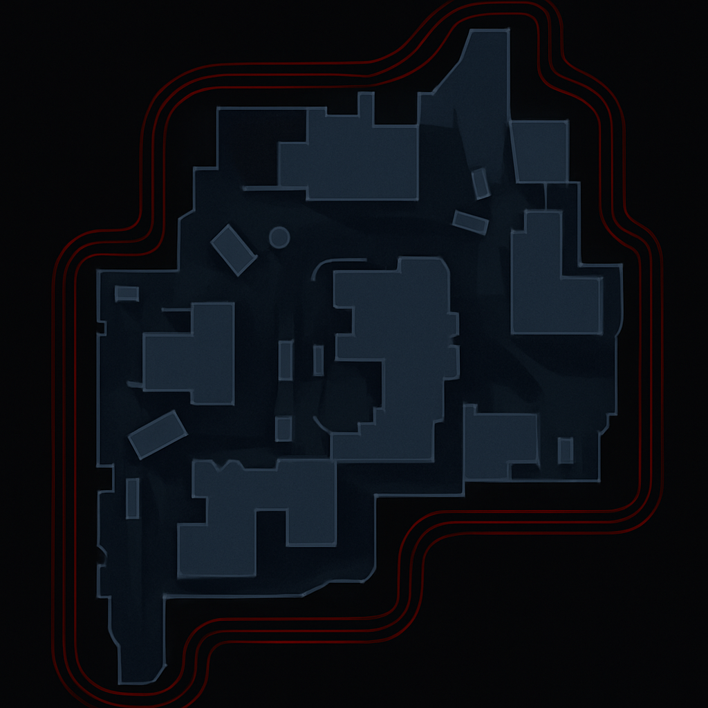

Standoff Tactical Map
Click to draw. Use arrows for directions. Right-click text markers to delete. Drag and drop to move. Use undo/redo shortcuts (Ctrl+Z / Ctrl+Y).
Click to draw. Use arrows for directions. Right-click text markers to delete. Drag and drop to move. Use undo/redo shortcuts (Ctrl+Z / Ctrl+Y).